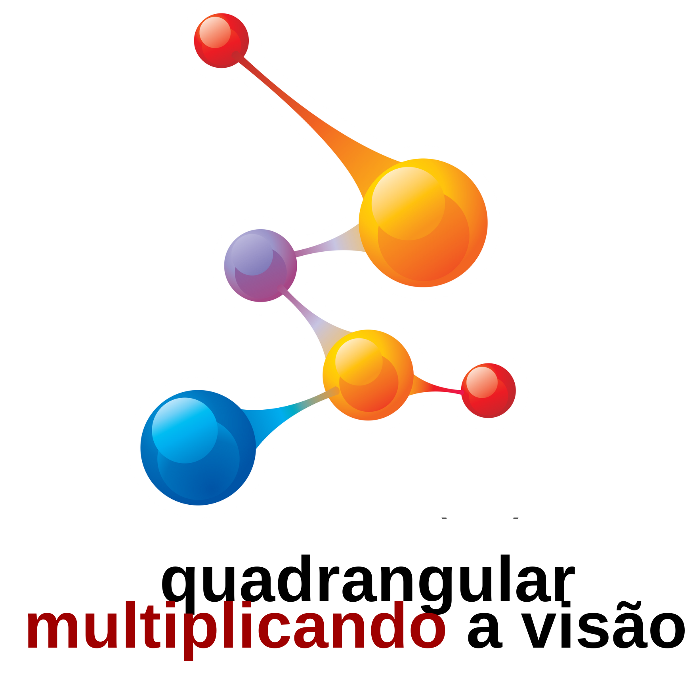
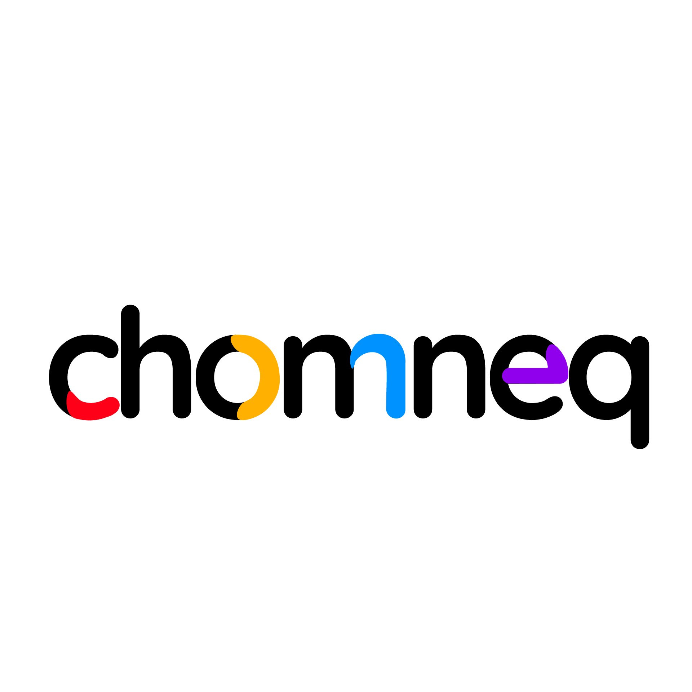
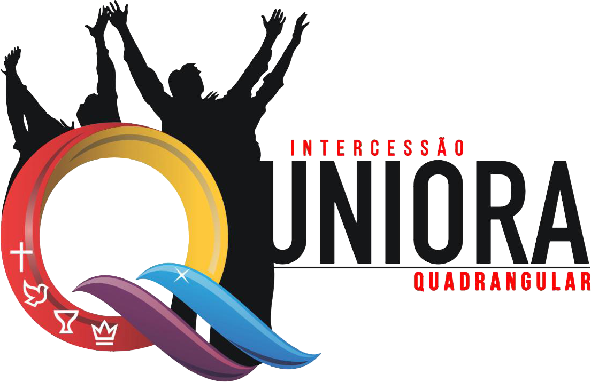

Bem-vindo à Quadrangular Sítio
Um lugar de Amor, Fé, Esperança e Poder.
Conheça nossa casaSobre a Nossa Igreja
Somos uma igreja fundamentada nos quatro pilares da fé que definem o evangelho completo de Jesus Cristo. Clique para saber mais.
Salvador
Jesus, o Salvador que perdoa.
Batizador
O poder do Espírito Santo.
Médico
Jesus, o Médico que cura.
Rei que Voltará
A esperança do seu retorno.
Nossos Dias de Culto
Quarta-feira
Culto da Vitória
19h30
Sábado
Discipulado
18h30
Domingo
Culto de Celebração
18h30
Nossos Ministérios
Acessibilidade

Adolescentes
Casais

Células
COMMEQ
Crianças e Juniores
Diaconato
Esquadrão
Filho de Pastores
Homens
Jovens
Mulheres

Negócios
